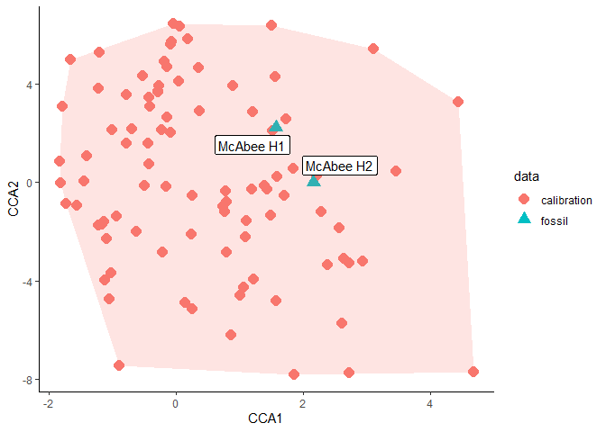

The goal of dilp is to help with analysis of quantitative fossil leaf traits. Methods included are:
-
Digital Leaf Physiognomy - dilp()
- Estimate mean annual temperature and mean annual precipitation using multiple linear regressions.
-
Fossil Leaf Mass per Area - lma()
- Reconstruct leaf mass per area using leaf area and petiole width
-
Leaf Margin Analysis - temp_slr()
- Estimate mean annual temperature using leaf margin
-
Leaf Area Analysis - precip_slr()
- Estimate mean annual precipitation using leaf area
Installation
You can install the development version of dilp from GitHub with:
# install.packages("devtools")
devtools::install_github("mjbutrim/dilp")Example
This is a basic example which shows you how to run a basic DiLP and LMA analysis:
library(dilp)
## basic example code
dilp_results <- dilp(McAbeeExample)
lma_results <- lma(McAbeeExample)
data.frame(Site = c("McAbee H1", "McAbee H2"),
MAT_MLR = dilp_results$results$MAT.MLR,
MAT_SLR = dilp_results$results$MAT.SLR,
MAP_MLR = dilp_results$results$MAP.MLR,
MAP_SLR = dilp_results$results$MAP.SLR,
site_mean_LMA = lma_results$lowe_site_mean_lma$value)
#> Site MAT_MLR MAT_SLR MAP_MLR MAP_SLR site_mean_LMA
#> 1 McAbee H1 13.59866 11.18065 107.076 126.7697 73.68178
#> 2 McAbee H2 11.63970 9.36000 133.633 135.8734 67.58568You can check the validity of your DiLP results like so:
dilp_results$errors
#> Check Specimen1
#> 1 Entire tooth count not NA none
#> 2 Entire tooth count : IP not NA none
#> 3 Entire perimeter ratio not NA none
#> 4 FDR not between 0-1 none
#> 5 External perimeter not larger than internal perimeter none
#> 6 Feret is not larger than minimum Feret none
#> 7 Perimeter ratio not greater than 1 none
dilp_results$outliers
#> Variable Outlier1 Outlier2 Outlier3 Outlier4
#> 1 fdr <NA> <NA> <NA> <NA>
#> 2 tc_ip BU-712-1117 BU-712-1169A BU-712-1176A <NA>
#> 3 leaf_area BU-712-2173A BU-712-2105A BU-712-2124 <NA>
#> 4 perimeter_ratio M-2015-1-1 BU-712-1073A BU-712-1165 M-2015-1-62
dilp_cca(dilp_results)